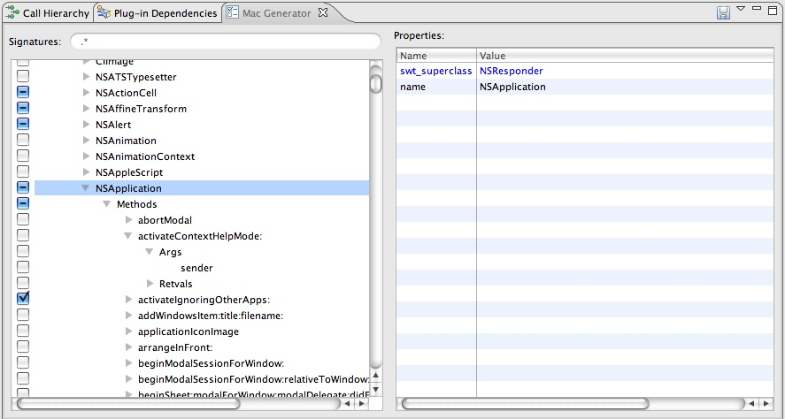
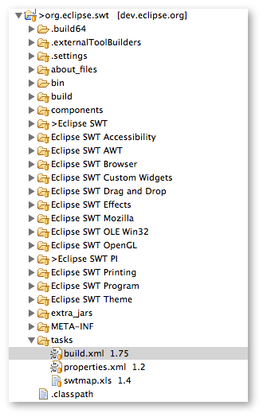
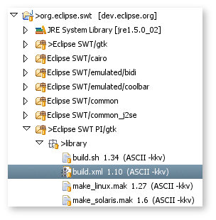

Generating the SWT PI Code for Cocoa
Most of the platform interface and C code used by SWT on the Mac/Cocoa port is generated by the MacGeneratorUI class included in the SWT Tools plugin available on the Update Sites. This page describes how to use this tool when fixing bugs or adding features to SWT for cocoa.
Installing the plugin
- Install the plugin using the Update Site.
- Restart Eclipse and show the view Mac Generator from the SWT Tools category.
Using the tool
- The tool shows a list of Mac frameworks on the left side.
 - Items from the list can be checked to be generated.
- Once the desired items are checked, press the generate tool bar button to generate all the necessary JNI code. This includes the java binding for Cocoa classes, the C source for the JNI Natives and also supporting files for the tool. All files are under Eclipse SWT PI/cocoa directory and if appropriate should be released.
- Compile the new C code.
On Eclipse 3.5.1 and newer releases:
To compile the code, right-click on the build.xml file in the tasks directory, and choose "Run As -> Ant Build...". Select the JRE tab, and check "Run in the same JRE as the workspace". Select the Targets tab, and check build_cocoa_x86_and_ppc or build_cocoa_x86_64 according to platform you wish to target. See the instructions at the beginning of the build.xml file for more information. On Eclipse 3.5 and older releases:
To compile the code, right-click on the build.xml file in the Eclipse SWT PI/cocoa/library directory, and choose "Run As -> Ant Build...". Select the JRE tab, and check "Run in the same JRE as the workspace". Select the Refresh tab, and check "Refresh resources upon completion" to refresh your workspace after running the build to ensure Eclipse picks up the fresh binaries. Now select the "Run" button.